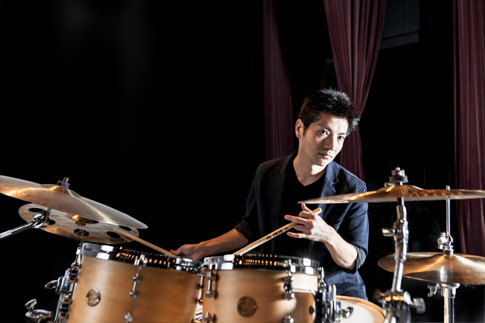

阿部拓也 — ドラマー / 打楽器奏者 / 指揮者 / 編曲家 / 吹奏楽指導者 / ピアニスト / レコーディングエンジニア

埼玉県生まれ。
14歳よりピアノ、16歳より拓殖大学第一高等学校吹奏楽部にてドラム・パーカッションを始める。拓殖大学政経学部経済学科在学中よりプロ活動を開始。ドラムを岡野洋氏に習う。プロドラマー岩瀬立飛氏のローディを1年半ほど経験。奏法等多くのことを学ぶ。クラシック音楽からジャズ、ロックまでジャンルを超えた幅広い演奏活動を展開中。
数多くのバンド、楽団で演奏する傍、音楽教室の運営、自身が主宰するリトルピース・パーカッションの代表を務めている。幅広いジャンルでの実践的な経験が多様な視座を生み出し、様々なジャンルへの柔軟な対応力を持つに至っている。その経験と視点を生かし、後進の育成に積極的に取り組んでいる。現在は大阪芸術大学通信教育部にて、教員免許取得に向けて学んでいる。
NPO法人えむの集い副代表 理事、公益社団法人 日本吹奏楽指導者協会(JBA)会員、一般社団法人吹奏楽教育協会会員、リトルピースパーカッション主宰。
2007年〜2010年「ブリッツ・ブラス」の打楽器奏者として活動。2010年〜2022年4月「ブラス・エクシード・トウキョウ」の打楽器奏者として活動。主にスネアドラム、ドラムセットを担当する。その他、オーケストラや吹奏楽団にエキストラ出演している。2017年12月には「東京佼成ウインドオーケストラ」の演奏会にゲストドラマーとして出演。好評を博す。
世界的ジャズピアニスト、前田憲男氏と共演するなどジャズドラマーとしても勢力的に活動。榎田竜路とのユニット「真荷舟-manifune-」ではケニア、オーストラリア、中国、台湾など、国内外問わずライブ活動を展開。同ユニットでは映画音楽や映像コンテンツを制作、ここではピアニスト、ドラマー、トラックメイキングプログラマーとして参加している(ドキュメンタリー映画「ミスター・ナチュラルと呼ばれた男」など)。
また、オペラ歌手と弦楽器、ピアニスト、パーカッションからなるクラシック音楽家集団「Mの集い」の主要メンバーとして、自主公演の他、学校公演、企業イベントなど日本各地で演奏する。現代音楽作曲家、横谷基がリーダーを務めるジャズピアノトリオ「横谷基トリオ」のメンバーとして25年活動。CDも制作している。
自身が代表を務める音楽ユニット「リトルピース・パーカッション」パーカッションアンサンブル多様なニーズにお応えできる日本のトッププレイヤーが所属している。主にホール主催公演、企業イベント、学校公演(音楽鑑賞教室)などを行う。また、レコーディングエンジニアとして多くの作品の録音に携わる。お客様のニーズに合わせた形での出張レコーディングを主に行なっている。これまでに多数のクラシック関係の作品を手がける。
指揮者としても10年以上のキャリアを持つ。吹奏楽団「ゼストブラス」にて第2回、第3回、第4回定期公演、その他イベントコンサートにて指揮を務めた。
2016年、一般市民吹奏楽団「三芳ウインドオーケストラ」を創立。楽団代表である後藤裕美と共に運営をしている。吹奏楽をより身近なものとし、誰もが永く楽しめる場を作りたいと思い結成に至る。現在40名以上の楽団員を有する楽団となった。音楽監督及び常任指揮を務めながら、運営、企画、選曲、すべてに携わり、団の発展に尽力している。令和5年、三芳町ふるさと大使に任命。
中学校や高校の吹奏楽部での指導実績多数。日本打楽器協会が主催する「ジュニア打楽器アンサンブルコンクール」においては、11年間で延べ13団体を全国大会出場へと導いた。一方、バンド全体のディレクター、トレーナーとして、個性を尊重した指導を実現。多くの学校を創部以来初となる都大会、県大会、西関東大会など上位大会出場へと導いている。また埼玉県吹奏楽コンクール新人戦や、新潟県吹奏楽コンクール新人戦の審査員や、その他アンサンブルコンテストなどの審査員を務めるなど、吹奏楽の分野に大きく力を注いでいる。
同時に、キッズバンドのプロデュース、及び指導やドラム、パーカッションワークショップを実施。ドラムワークショップでは、初めて楽器に触れる小中学生に楽器の演奏法を指導し、その面白さを伝え、ステージに立つことの喜びを体感させるプログラムを開発した。
これらの教育プログラムでは、音楽を通じて子どもたちの自尊感情を高め、仲間との連帯感を大切にし、生きる力を育むことを目的としており、体験した子供たちが音楽のみならず、生活全般において前向きになるケースも多く、評判を呼んでいる。現在、口コミなどで確実な広がりを見せている。
また、打楽器やジャンベを通じて集中力や自己肯定感を育む身体教育ワークショップにも力を注いでいる。東京都八王子市立浅川小学校では「全集中」をテーマに、いい音を出す感覚を頼りに演奏することで集中力と自己肯定感を高めるプログラムを実施。同市立弍分方小学校では、打楽器を通じて非言語領域でのコミュニケーションスキルを育む「プリミティブコミュニケーション授業」を展開。岡山県津山市では真荷舟として小学生向けパーカッション・ワークショップを開催するほか、喬松小学校・南小学校では自己肯定感や学力向上を目的とした身体講座を行うなど、福島県の中学校をはじめ全国各地の学校教育の現場に取り入れられている。
群馬県立安中総合学園高等学校では社会人講話の講師を担当。打楽器奏者としての経験を活かし、リズムやボディリズムの楽しさを体感してもらうワークショップ形式の講話を行った。
2025年4月より、ジャパンライム オンデマンド サービスで配信されている音楽授業コンテンツ『打楽器の基礎・応用』（小学校「器楽」・吹奏楽指導向け、指導・解説：文京学院大学人間学部 渡辺行野准教授）に実技協力として参加。大太鼓や小太鼓、木琴・鉄琴など幅広い打楽器の奏法を、年間を通して段階的に紹介する教材制作に携わっている。